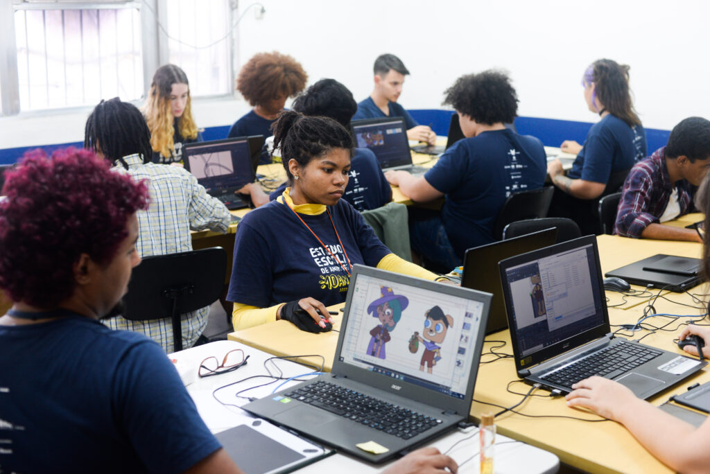
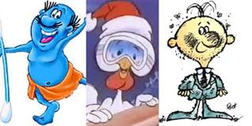

A animação está presente em inúmeros contextos do cotidiano contemporâneo,
desempenhando papéis importantes tanto na comunicação quanto no entretenimento.
Seu uso vai desde fins educacionais até produções complexas da indústria audiovisual.
A seguir, alguns dos principais campos de aplicação da animação:
Educação: Facilita a compreensão de conteúdos por meio de recursos visuais dinâmicos.

Publicidade: Cria campanhas atraentes e memoráveis por meio de personagens e movimentos.

Cinema e Televisão: Está presente em filmes, séries, efeitos visuais e desenhos animados.
Jogos Digitais: Contribui para a criação de personagens, cenários e efeitos realistas.
Simulações: Utilizada em treinamentos, realidade virtual e demonstrações técnicas.